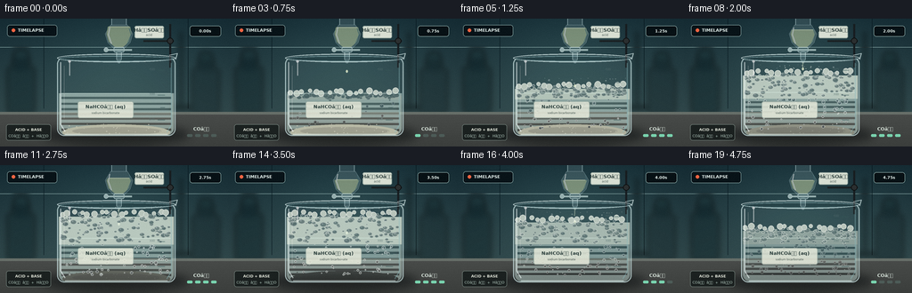
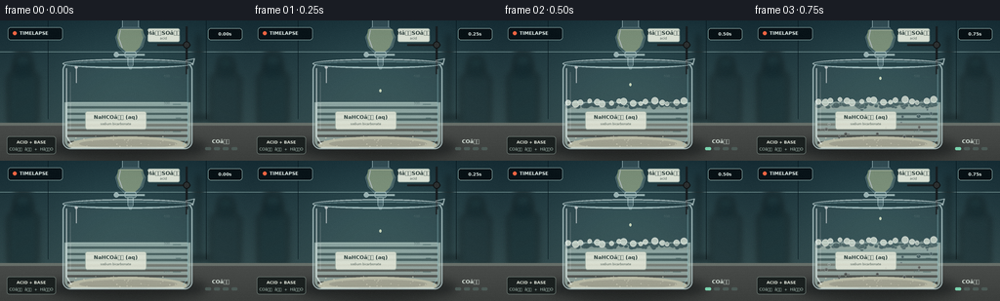

CODING AGENTS AS PIXEL WORLD MODELS
traex/GPT-5.6-Sol · material_0036
点击播放 · 原生 RGB 像素
逐轮保存的候选
回放视频、检查图与代码变化。
每份候选均可单独播放。实际图片检查记录在下方工具轨迹中。
候选 01播放与检查图
点击播放 · 原生 RGB 像素


展开代码变化
--- 上一保存版本
+++ 本次保存版本
@@ -0,0 +1,286 @@
+from pathlib import Path
+import math, random
+import numpy as np
+from PIL import Image, ImageDraw, ImageFont, ImageFilter
+import artifact_io
+
+# Deterministic, text-to-video procedural rendering of a laboratory acid-carbonate reaction.
+W, H, N = 256, 144, 20
+S = 4
+WS, HS = W*S, H*S
+ROOT = Path(__file__).resolve().parent
+
+FONT_REG = '/usr/share/fonts/truetype/dejavu/DejaVuSans.ttf'
+FONT_BOLD = '/usr/share/fonts/truetype/dejavu/DejaVuSans-Bold.ttf'
+
+def font(sz, bold=False):
+ return ImageFont.truetype(FONT_BOLD if bold else FONT_REG, sz*S)
+
+def sc(v): return int(round(v*S))
+def box(t): return tuple(sc(v) for v in t)
+def pts(p): return [(sc(x),sc(y)) for x,y in p]
+
+def rounded(draw, xy, radius, fill, outline=None, width=1):
+ draw.rounded_rectangle(box(xy), radius=sc(radius), fill=fill, outline=outline, width=sc(width))
+
+def line(draw, xy, fill, width=1):
+ draw.line(pts(xy), fill=fill, width=sc(width), joint='curve')
+
+def ellipse(draw, xy, fill=None, outline=None, width=1):
+ draw.ellipse(box(xy), fill=fill, outline=outline, width=sc(width))
+
+def text(draw, xy, s, fnt, fill, anchor=None):
+ draw.text((sc(xy[0]),sc(xy[1])), s, font=fnt, fill=fill, anchor=anchor)
+
+def background(frame):
+ # Cool laboratory wall with mild depth and a warm work surface.
+ arr = np.zeros((HS, WS, 3), np.float32)
+ yy = np.arange(HS)[:,None] / S
+ xx = np.arange(WS)[None,:] / S
+ top = np.array([20,42,50],np.float32)
+ bottom = np.array([48,71,74],np.float32)
+ g = np.clip(yy/112,0,1)[...,None]
+ arr[:] = top*(1-g)+bottom*g
+ # central pool of soft teal light
+ light = np.exp(-(((xx-132)/92)**2 + ((yy-50)/67)**2))[...,None]
+ arr += light*np.array([12,18,17])
+ im = Image.fromarray(np.uint8(np.clip(arr,0,255)), 'RGB').convert('RGBA')
+ d = ImageDraw.Draw(im, 'RGBA')
+ # wall seams and shelf
+ line(d, [(0,32),(256,32)], (145,177,175,18), .45)
+ line(d, [(49,0),(49,101)], (5,21,28,33), .5)
+ line(d, [(211,0),(211,101)], (5,21,28,31), .5)
+ # Out-of-focus bottles and stands in rear.
+ blur = Image.new('RGBA',(WS,HS),(0,0,0,0)); bd=ImageDraw.Draw(blur,'RGBA')
+ rounded(bd,(8,54,39,107),4,(22,44,48,150))
+ rounded(bd,(14,42,33,59),3,(14,34,39,170))
+ rounded(bd,(16,35,31,44),2,(27,52,57,160))
+ rounded(bd,(216,56,246,107),4,(27,46,50,140))
+ rounded(bd,(222,44,240,59),3,(16,34,38,150))
+ rounded(bd,(224,38,238,46),2,(25,50,54,150))
+ # chemistry stand in far background
+ line(bd,[(203,15),(203,103)],(9,19,23,150),3)
+ line(bd,[(191,100),(216,100)],(7,16,19,150),4)
+ im = Image.alpha_composite(im, blur.filter(ImageFilter.GaussianBlur(sc(3))))
+ d=ImageDraw.Draw(im,'RGBA')
+ # bench top
+ d.rectangle(box((0,105,256,144)), fill=(60,64,63,255))
+ d.rectangle(box((0,105,256,108)), fill=(103,111,105,255))
+ # subtle countertop gradient strips
+ for y in range(108,144):
+ c=int(72-0.35*(y-108)); d.rectangle(box((0,y,256,y+1)), fill=(c,c+3,c+1,255))
+ # shadows on the counter
+ shadow=Image.new('RGBA',(WS,HS),(0,0,0,0)); sd=ImageDraw.Draw(shadow,'RGBA')
+ ellipse(sd,(47,119,213,142),(0,5,8,125))
+ ellipse(sd,(73,125,194,138),(0,0,0,115))
+ im=Image.alpha_composite(im,shadow.filter(ImageFilter.GaussianBlur(sc(5))))
+ return im
+
+# fixed bubble parameters for coherent motion
+rng=random.Random(361)
+liquid_bubbles=[]
+for i in range(145):
+ liquid_bubbles.append(dict(x=rng.uniform(73,187), phase=rng.random(), r=rng.uniform(.45,2.25),
+ speed=rng.uniform(.65,1.45), birth=rng.uniform(.04,.88), wob=rng.uniform(0,6.28)))
+foam_cells=[]
+for i in range(115):
+ foam_cells.append(dict(x=rng.uniform(68,191), y=rng.uniform(0,1), r=rng.uniform(1.0,3.5),
+ phase=rng.uniform(0,6.28), shade=rng.random()))
+spray=[]
+for i in range(22):
+ spray.append(dict(x=rng.uniform(-1,1), y=rng.uniform(.1,1), r=rng.uniform(.3,.9), phase=rng.random()))
+
+def ease(a,b,x):
+ u=np.clip((x-a)/(b-a),0,1); return float(u*u*(3-2*u))
+
+def draw_dropper(im,t,frame):
+ # Addition apparatus: acid-filled glass dropping funnel from above.
+ lay=Image.new('RGBA',(WS,HS),(0,0,0,0)); d=ImageDraw.Draw(lay,'RGBA')
+ # clamp/support behind glass
+ line(d,[(191,6),(191,55)],(22,25,28,220),2.2)
+ line(d,[(161,25),(195,25)],(26,29,31,225),2)
+ ellipse(d,(187.5,21.5,194.5,28.5),(43,47,48,255),(10,12,13,255),.7)
+ # reservoir neck and bulb
+ rounded(d,(125,-5,142,11),4,(182,214,216,34),(205,232,233,150),.8)
+ d.polygon(pts([(124,7),(143,7),(149,17),(146,27),(139,34),(128,34),(121,27),(118,17)]),
+ fill=(190,220,221,42), outline=(210,236,236,165))
+ # pale sulfuric acid volume slowly falls
+ acid_top=9 + 8*ease(.0,.92,t)
+ d.polygon(pts([(121,acid_top),(146,acid_top),(147.5,17),(144.5,26),(138,32),(129,32),(122,26),(119.5,17)]),
+ fill=(211,225,174,125))
+ line(d,[(122,acid_top),(145,acid_top)],(235,244,205,175),.65)
+ # highlights
+ line(d,[(123,10),(121.5,18),(125,28)],(255,255,255,160),1)
+ line(d,[(145,11),(147,18),(143,28)],(126,176,182,90),.7)
+ # stopcock and stem
+ rounded(d,(127.5,32,139.5,38),2,(126,162,164,90),(214,237,236,180),.7)
+ line(d,[(119,35),(148,35)],(189,213,211,190),2.0)
+ ellipse(d,(116.5,32.5,121.5,37.5),(202,227,225,170),(235,249,247,180),.5)
+ rounded(d,(130.5,37,136.5,47),1.7,(181,216,218,55),(214,240,240,165),.7)
+ d.polygon(pts([(131.2,46),(135.8,46),(134.4,50),(132.4,50)]),fill=(188,220,221,65),outline=(215,239,239,145))
+ # label tag ties apparatus to prompt
+ rounded(d,(151,8,184,22),2,(232,237,223,235),(160,177,168,220),.7)
+ text(d,(167.5,12.8),'HâSOâ',font(5.5,True),(45,63,60,255),'mm')
+ text(d,(167.5,18.2),'acid',font(3.5),(77,93,88,245),'mm')
+ # droplet/short stream until late in reaction
+ if .03 < t < .91:
+ cycle=(frame*.78)%1
+ y=50+cycle*29
+ # a bright fine stream during most vigorous stage
+ vigor=ease(.18,.48,t)*(1-ease(.78,.94,t))
+ if vigor>.35:
+ line(d,[(133.4,49),(133.1,57)],(226,237,202,int(90+80*vigor)),.65)
+ ellipse(d,(132.2,y-2,134.5,y+1),(231,240,200,205),(252,255,235,220),.35)
+ return Image.alpha_composite(im,lay)
+
+def beaker_and_reaction(im,t,frame):
+ # Reaction kinetics: cloudy bicarbonate clears while CO2 foam grows, peaks, and recedes.
+ onset=ease(.04,.32,t)
+ late=ease(.72,1.0,t)
+ vigor=onset*(1-0.72*late)
+ # foam top y: 83 -> 54 at peak -> 69 after addition
+ foam_top=84 - 30*ease(.10,.55,t) + 16*ease(.72,1,t)
+ liquid_top=84 - 2.0*ease(.1,.7,t)
+ bx0,bx1,by0,by1=64,197,43,132
+
+ # Interior clipping mask, slightly rounded lower body.
+ mask=Image.new('L',(WS,HS),0); md=ImageDraw.Draw(mask)
+ md.rounded_rectangle(box((66,45,195,131)),radius=sc(8),fill=255)
+ interior=Image.new('RGBA',(WS,HS),(0,0,0,0)); d=ImageDraw.Draw(interior,'RGBA')
+ # solution body; gradually transforms from opaque chalky cream to clearer colorless solution
+ cloud=1-ease(.28,.95,t)
+ col=(int(184+18*(1-cloud)),int(207+18*(1-cloud)),int(198+20*(1-cloud)),int(165-45*(1-cloud)))
+ d.rectangle(box((66,liquid_top,195,132)),fill=col)
+ # pale turbidity bands
+ for k in range(7):
+ y=liquid_top+4+k*6 + math.sin(frame*.27+k)*.8
+ alpha=int(25*cloud)
+ d.rectangle(box((69,y,192,y+2.2)),fill=(242,239,205,alpha))
+ # bicarbonate sediment at bottom dissolves over time
+ sed_alpha=int(195*(1-ease(.18,.82,t)))
+ if sed_alpha>2:
+ d.ellipse(box((70,119,191,137)),fill=(225,224,197,sed_alpha))
+ d.ellipse(box((81,122,181,131)),fill=(245,242,214,int(sed_alpha*.75)))
+ for k in range(30):
+ rr=random.Random(1000+k)
+ x=rr.uniform(73,190); y=rr.uniform(118,129)
+ ellipse(d,(x,y,x+rr.uniform(.4,1.4),y+rr.uniform(.3,.9)),(249,246,220,sed_alpha))
+ # liquid bubbles rise coherently, increasing with reaction vigor
+ for i,b in enumerate(liquid_bubbles):
+ active=ease(b['birth']*.42,b['birth']*.42+.16,t)*vigor
+ if active < .08: continue
+ cyc=(b['phase'] + t*(1.8+2*b['speed']))%1
+ y=124 - cyc*(124-foam_top)
+ x=b['x']+math.sin(cyc*7+b['wob'])*1.8
+ # within slightly tapering vessel
+ r=b['r']*(.75+.4*cyc)
+ a=int(60+135*active)
+ ellipse(d,(x-r,y-r,x+r,y+r),(230,244,236,int(a*.18)),(250,255,250,a),.45)
+ ellipse(d,(x-r*.35,y-r*.52,x+r*.08,y-r*.1),(255,255,255,int(a*.7)))
+ # foam mass, softly underlaid
+ if onset>.02:
+ d.rectangle(box((66,foam_top+4,195,liquid_top+7)),fill=(226,237,221,int(105+90*vigor)))
+ # foam cells distributed from current top to liquid surface
+ depth=max(5, liquid_top-foam_top+5)
+ for i,c in enumerate(foam_cells):
+ y=foam_top + c['y']*depth + math.sin(frame*.32+c['phase'])*.65
+ x=c['x'] + math.sin(frame*.18+c['phase'])*.8
+ r=c['r']*(.78+.32*math.sin(c['phase']+t*4)**2)
+ # top bubbles more white; lower cells pale greenish
+ alpha=int((115+90*(1-c['shade']))*onset)
+ fill=(241,246,229,int(alpha*.45))
+ edge=(252,255,244,alpha)
+ ellipse(d,(x-r,y-r*.72,x+r,y+r*.72),fill,edge,.45)
+ if r>2.1: ellipse(d,(x-r*.45,y-r*.42,x-r*.04,y-r*.08),(255,255,255,int(alpha*.75)))
+ # irregular crest bubbles
+ for j in range(17):
+ x=69+j*7.4+math.sin(j*2.1+frame*.19)*1.6
+ r=2.2+1.4*(.5+.5*math.sin(j*1.7))
+ y=foam_top+math.sin(j*1.44+frame*.15)*1.6
+ ellipse(d,(x-r,y-r,x+r,y+r),(243,248,232,180),(255,255,248,220),.55)
+ interior.putalpha(Image.composite(interior.getchannel('A'),Image.new('L',(WS,HS),0),mask))
+ im=Image.alpha_composite(im,interior)
+
+ # bubbles/spray above crest at peak reaction
+ if vigor>.45:
+ sp=Image.new('RGBA',(WS,HS),(0,0,0,0)); sd=ImageDraw.Draw(sp,'RGBA')
+ for q in spray:
+ life=(t*3.3+q['phase'])%1
+ x=133+q['x']*52*(.45+life)
+ y=foam_top-2-life*14+8*life*life
+ r=q['r']*(1-.35*life)
+ a=int(165*vigor*(1-life))
+ ellipse(sd,(x-r,y-r,x+r,y+r),(238,248,236,int(a*.25)),(252,255,249,a),.4)
+ im=Image.alpha_composite(im,sp)
+
+ # Glass body and reflections above contents.
+ glass=Image.new('RGBA',(WS,HS),(0,0,0,0)); gd=ImageDraw.Draw(glass,'RGBA')
+ # outer rim, lip and body
+ gd.rounded_rectangle(box((64,43,197,132)),radius=sc(8),fill=(191,224,225,13),outline=(209,234,234,180),width=sc(1.15))
+ ellipse(gd,(64,39.5,197,49),(187,220,221,20),(224,242,241,195),1.05)
+ ellipse(gd,(67,42,194,48),(25,54,60,35),(170,212,215,145),.65)
+ # small pouring spout at right
+ line(gd,[(190,41),(199,39),(197,46)],(220,240,239,180),1.1)
+ # water/foam meniscus
+ line(gd,[(69,liquid_top),(192,liquid_top)],(224,246,237,120),.7)
+ # side highlights and base
+ line(gd,[(68,49),(68,119),(73,127)],(246,255,255,150),1.3)
+ line(gd,[(72,53),(72,112)],(255,255,255,60),.7)
+ line(gd,[(192,50),(192,120),(187,128)],(142,190,194,120),1)
+ line(gd,[(73,130),(188,130)],(226,242,239,165),1)
+ # volume graduations and values
+ for k,y in enumerate([58,72,86,100,114]):
+ L=8 if k%2==0 else 5
+ line(gd,[(185-L,y),(185,y)],(58,91,92,155),.65)
+ text(gd,(174,57),'400',font(3.4),(54,79,79,180),'rm')
+ text(gd,(174,85),'300',font(3.4),(54,79,79,180),'rm')
+ text(gd,(174,113),'200',font(3.4),(54,79,79,180),'rm')
+ # beaker label
+ rounded(gd,(87,93,150,112),2.4,(230,234,219,218),(153,172,164,205),.65)
+ text(gd,(118.5,99),'NaHCOâ (aq)',font(5.3,True),(40,60,58,255),'mm')
+ text(gd,(118.5,106.1),'sodium bicarbonate',font(3.15),(67,84,79,250),'mm')
+ # sparkly glass reflections
+ line(gd,[(78,48),(78,64)],(255,255,255,155),1)
+ ellipse(gd,(76.5,46.5,79.5,49.5),(255,255,255,170))
+ im=Image.alpha_composite(im,glass)
+ return im, vigor, foam_top
+
+def overlays(im,t,frame,vigor):
+ d=ImageDraw.Draw(im,'RGBA')
+ # Compact documentary/timelapse UI.
+ rounded(d,(8,7,64,20),3,(8,19,24,177),(147,178,175,70),.5)
+ ellipse(d,(13,11,17,15),(238,100,66,255))
+ text(d,(20,13),'TIMELAPSE',font(4.7,True),(226,239,235,245),'lm')
+ # time badge
+ rounded(d,(213,8,248,20),3,(7,17,21,150),(160,190,185,65),.5)
+ text(d,(230.5,14),f'{frame/4:0.2f}s',font(4.5,True),(226,238,234,245),'mm')
+ # understated chemistry caption on bench, evidence of transformation
+ rounded(d,(7,119,57,137),2.5,(27,33,32,190),(118,132,126,80),.5)
+ text(d,(32,125),'ACID + BASE',font(4.2,True),(224,228,216,240),'mm')
+ text(d,(32,132),'COâ â + HâO',font(4.0),(190,214,203,235),'mm')
+ # reaction activity indicator lower right
+ text(d,(226,124),'COâ',font(5.2,True),(218,230,221,225),'mm')
+ for k in range(4):
+ active=vigor*4-k
+ col=(121,211,174,220) if active>.55 else (77,92,88,120)
+ rounded(d,(210+k*9,130,216+k*9,133),1.2,col)
+ return im
+
+def render(frame):
+ t=frame/(N-1)
+ im=background(frame)
+ im=draw_dropper(im,t,frame)
+ im,vigor,foam=beaker_and_reaction(im,t,frame)
+ im=overlays(im,t,frame,vigor)
+ # mild optical bloom, then high-quality downsample
+ rgb=im.convert('RGB').resize((W,H),Image.Resampling.LANCZOS)
+ a=np.array(rgb).astype(np.int16)
+ # subtle fixed sensor grain (not flickering strongly)
+ rg=np.random.default_rng(900+frame)
+ noise=rg.normal(0,0.65,(H,W,1))
+ a=np.clip(a+noise,0,255).astype(np.uint8)
+ return a
+
+frames=np.stack([render(i) for i in range(N)],axis=0)
+artifact_io.save(frames, ROOT)
+print('saved',frames.shape,frames.dtype)
可观测工具轨迹
实际执行的命令与返回图片。
命令 1exit 0
/bin/bash -lc "cat prompt.txt && printf '\\n---RULES---\\n' && cat GENERATION_RULES.md && printf '\\n---SPEC---\\n' && cat task_spec.json"
命令 2exit 0
/bin/bash -lc "find . -maxdepth 2 -type f -printf '%p\\n' | sort && printf '\\n---TOOLS---\\n' && command -v ffmpeg || true && command -v python3 || true && python3 - <<'PY' mods=['PIL','cv2','numpy','imageio','moviepy'] for m in mods: try: x=__import__(m); print(m, getattr(x,'__version__','ok')) except Exception as e: print(m,'NO',e) PY"
命令 3exit 0
/bin/bash -lc 'cat artifact_io.py'
命令 4exit 0
/bin/bash -lc "cat > generate.py <<'PY'
from pathlib import Path
import math, random
import numpy as np
from PIL import Image, ImageDraw, ImageFont, ImageFilter
import artifact_io
# Deterministic, text-to-video procedural rendering of a laboratory acid-carbonate reaction.
W, H, N = 256, 144, 20
S = 4
WS, HS = W*S, H*S
ROOT = Path(__file__).resolve().parent
FONT_REG = '/usr/share/fonts/truetype/dejavu/DejaVuSans.ttf'
FONT_BOLD = '/usr/share/fonts/truetype/dejavu/DejaVuSans-Bold.ttf'
def font(sz, bold=False):
return ImageFont.truetype(FONT_BOLD if bold else FONT_REG, sz*S)
def sc(v): return int(round(v*S))
def box(t): return tuple(sc(v) for v in t)
def pts(p): return [(sc(x),sc(y)) for x,y in p]
def rounded(draw, xy, radius, fill, outline=None, width=1):
draw.rounded_rectangle(box(xy), radius=sc(radius), fill=fill, outline=outline, width=sc(width))
def line(draw, xy, fill, width=1):
draw.line(pts(xy), fill=fill, width=sc(width), joint='curve')
def ellipse(draw, xy, fill=None, outline=None, width=1):
draw.ellipse(box(xy), fill=fill, outline=outline, width=sc(width))
def text(draw, xy, s, fnt, fill, anchor=None):
draw.text((sc(xy[0]),sc(xy[1])), s, font=fnt, fill=fill, anchor=anchor)
def background(frame):
# Cool laboratory wall with mild depth and a warm work surface.
arr = np.zeros((HS, WS, 3), np.float32)
yy = np.arange(HS)[:,None] / S
xx = np.arange(WS)[None,:] / S
top = np.array([20,42,50],np.float32)
bottom = np.array([48,71,74],np.float32)
g = np.clip(yy/112,0,1)[...,None]
arr[:] = top*(1-g)+bottom*g
# central pool of soft teal light
light = np.exp(-(((xx-132)/92)**2 + ((yy-50)/67)**2))[...,None]
arr += light*np.array([12,18,17])
im = Image.fromarray(np.uint8(np.clip(arr,0,255)), 'RGB').convert('RGBA')
d = ImageDraw.Draw(im, 'RGBA')
# wall seams and shelf
line(d, [(0,32),(256,32)], (145,177,175,18), .45)
line(d, [(49,0),(49,101)], (5,21,28,33), .5)
line(d, [(211,0),(211,101)], (5,21,28,31), .5)
# Out-of-focus bottles and stands in rear.
blur = Image.new('RGBA',(WS,HS),(0,0,0,0)); bd=ImageDraw.Draw(blur,'RGBA')
rounded(bd,(8,54,39,107),4,(22,44,48,150))
rounded(bd,(14,42,33,59),3,(14,34,39,170))
rounded(bd,(16,35,31,44),2,(27,52,57,160))
rounded(bd,(216,56,246,107),4,(27,46,50,140))
rounded(bd,(222,44,240,59),3,(16,34,38,150))
rounded(bd,(224,38,238,46),2,(25,50,54,150))
# chemistry stand in far background
line(bd,[(203,15),(203,103)],(9,19,23,150),3)
line(bd,[(191,100),(216,100)],(7,16,19,150),4)
im = Image.alpha_composite(im, blur.filter(ImageFilter.GaussianBlur(sc(3))))
d=ImageDraw.Draw(im,'RGBA')
# bench top
d.rectangle(box((0,105,256,144)), fill=(60,64,63,255))
d.rectangle(box((0,105,256,108)), fill=(103,111,105,255))
# subtle countertop gradient strips
for y in range(108,144):
c=int(72-0.35*(y-108)); d.rectangle(box((0,y,256,y+1)), fill=(c,c+3,c+1,255))
# shadows on the counter
shadow=Image.new('RGBA',(WS,HS),(0,0,0,0)); sd=ImageDraw.Draw(shadow,'RGBA')
ellipse(sd,(47,119,213,142),(0,5,8,125))
ellipse(sd,(73,125,194,138),(0,0,0,115))
im=Image.alpha_composite(im,shadow.filter(ImageFilter.GaussianBlur(sc(5))))
return im
# fixed bubble parameters for coherent motion
rng=random.Random(361)
liquid_bubbles=[]
for i in range(145):
liquid_bubbles.append(dict(x=rng.uniform(73,187), phase=rng.random(), r=rng.uniform(.45,2.25),
speed=rng.uniform(.65,1.45), birth=rng.uniform(.04,.88), wob=rng.uniform(0,6.28)))
foam_cells=[]
for i in range(115):
foam_cells.append(dict(x=rng.uniform(68,191), y=rng.uniform(0,1), r=rng.uniform(1.0,3.5),
phase=rng.uniform(0,6.28), shade=rng.random()))
spray=[]
for i in range(22):
spray.append(dict(x=rng.uniform(-1,1), y=rng.uniform(.1,1), r=rng.uniform(.3,.9), phase=rng.random()))
def ease(a,b,x):
u=np.clip((x-a)/(b-a),0,1); return float(u*u*(3-2*u))
def draw_dropper(im,t,frame):
# Addition apparatus: acid-filled glass dropping funnel from above.
lay=Image.new('RGBA',(WS,HS),(0,0,0,0)); d=ImageDraw.Draw(lay,'RGBA')
# clamp/support behind glass
line(d,[(191,6),(191,55)],(22,25,28,220),2.2)
line(d,[(161,25),(195,25)],(26,29,31,225),2)
ellipse(d,(187.5,21.5,194.5,28.5),(43,47,48,255),(10,12,13,255),.7)
# reservoir neck and bulb
rounded(d,(125,-5,142,11),4,(182,214,216,34),(205,232,233,150),.8)
d.polygon(pts([(124,7),(143,7),(149,17),(146,27),(139,34),(128,34),(121,27),(118,17)]),
fill=(190,220,221,42), outline=(210,236,236,165))
# pale sulfuric acid volume slowly falls
acid_top=9 + 8*ease(.0,.92,t)
d.polygon(pts([(121,acid_top),(146,acid_top),(147.5,17),(144.5,26),(138,32),(129,32),(122,26),(119.5,17)]),
fill=(211,225,174,125))
line(d,[(122,acid_top),(145,acid_top)],(235,244,205,175),.65)
# highlights
line(d,[(123,10),(121.5,18),(125,28)],(255,255,255,160),1)
line(d,[(145,11),(147,18),(143,28)],(126,176,182,90),.7)
# stopcock and stem
rounded(d,(127.5,32,139.5,38),2,(126,162,164,90),(214,237,236,180),.7)
line(d,[(119,35),(148,35)],(189,213,211,190),2.0)
ellipse(d,(116.5,32.5,121.5,37.5),(202,227,225,170),(235,249,247,180),.5)
rounded(d,(130.5,37,136.5,47),1.7,(181,216,218,55),(214,240,240,165),.7)
d.polygon(pts([(131.2,46),(135.8,46),(134.4,50),(132.4,50)]),fill=(188,220,221,65),outline=(215,239,239,145))
# label tag ties apparatus to prompt
rounded(d,(151,8,184,22),2,(232,237,223,235),(160,177,168,220),.7)
text(d,(167.5,12.8),'HâSOâ',font(5.5,True),(45,63,60,255),'mm')
text(d,(167.5,18.2),'acid',font(3.5),(77,93,88,245),'mm')
# droplet/short stream until late in reaction
if .03 < t < .91:
cycle=(frame*.78)%1
y=50+cycle*29
# a bright fine stream during most vigorous stage
vigor=ease(.18,.48,t)*(1-ease(.78,.94,t))
if vigor>.35:
line(d,[(133.4,49),(133.1,57)],(226,237,202,int(90+80*vigor)),.65)
ellipse(d,(132.2,y-2,134.5,y+1),(231,240,200,205),(252,255,235,220),.35)
return Image.alpha_composite(im,lay)
def beaker_and_reaction(im,t,frame):
# Reaction kinetics: cloudy bicarbonate clears while CO2 foam grows, peaks, and recedes.
onset=ease(.04,.32,t)
late=ease(.72,1.0,t)
vigor=onset*(1-0.72*late)
# foam top y: 83 -> 54 at peak -> 69 after addition
foam_top=84 - 30*ease(.10,.55,t) + 16*ease(.72,1,t)
liquid_top=84 - 2.0*ease(.1,.7,t)
bx0,bx1,by0,by1=64,197,43,132
# Interior clipping mask, slightly rounded lower body.
mask=Image.new('L',(WS,HS),0); md=ImageDraw.Draw(mask)
md.rounded_rectangle(box((66,45,195,131)),radius=sc(8),fill=255)
interior=Image.new('RGBA',(WS,HS),(0,0,0,0)); d=ImageDraw.Draw(interior,'RGBA')
# solution body; gradually transforms from opaque chalky cream to clearer colorless solution
cloud=1-ease(.28,.95,t)
col=(int(184+18*(1-cloud)),int(207+18*(1-cloud)),int(198+20*(1-cloud)),int(165-45*(1-cloud)))
d.rectangle(box((66,liquid_top,195,132)),fill=col)
# pale turbidity bands
for k in range(7):
y=liquid_top+4+k*6 + math.sin(frame*.27+k)*.8
alpha=int(25*cloud)
d.rectangle(box((69,y,192,y+2.2)),fill=(242,239,205,alpha))
# bicarbonate sediment at bottom dissolves over time
sed_alpha=int(195*(1-ease(.18,.82,t)))
if sed_alpha>2:
d.ellipse(box((70,119,191,137)),fill=(225,224,197,sed_alpha))
d.ellipse(box((81,122,181,131)),fill=(245,242,214,int(sed_alpha*.75)))
for k in range(30):
rr=random.Random(1000+k)
x=rr.uniform(73,190); y=rr.uniform(118,129)
ellipse(d,(x,y,x+rr.uniform(.4,1.4),y+rr.uniform(.3,.9)),(249,246,220,sed_alpha))
# liquid bubbles rise coherently, increasing with reaction vigor
for i,b in enumerate(liquid_bubbles):
active=ease(b['birth']*.42,b['birth']*.42+.16,t)*vigor
if active < .08: continue
cyc=(b['phase'] + t*(1.8+2*b['speed']))%1
y=124 - cyc*(124-foam_top)
x=b['x']+math.sin(cyc*7+b['wob'])*1.8
# within slightly tapering vessel
r=b['r']*(.75+.4*cyc)
a=int(60+135*active)
ellipse(d,(x-r,y-r,x+r,y+r),(230,244,236,int(a*.18)),(250,255,250,a),.45)
ellipse(d,(x-r*.35,y-r*.52,x+r*.08,y-r*.1),(255,255,255,int(a*.7)))
# foam mass, softly underlaid
if onset>.02:
d.rectangle(box((66,foam_top+4,195,liquid_top+7)),fill=(226,237,221,int(105+90*vigor)))
# foam cells distributed from current top to liquid surface
depth=max(5, liquid_top-foam_top+5)
for i,c in enumerate(foam_cells):
y=foam_top + c['y']*depth + math.sin(frame*.32+c['phase'])*.65
x=c['x'] + math.sin(frame*.18+c['phase'])*.8
r=c['r']*(.78+.32*math.sin(c['phase']+t*4)**2)
# top bubbles more white; lower cells pale greenish
alpha=int((115+90*(1-c['shade']))*onset)
fill=(241,246,229,int(alpha*.45))
edge=(252,255,244,alpha)
ellipse(d,(x-r,y-r*.72,x+r,y+r*.72),fill,edge,.45)
if r>2.1: ellipse(d,(x-r*.45,y-r*.42,x-r*.04,y-r*.08),(255,255,255,int(alpha*.75)))
# irregular crest bubbles
for j in range(17):
x=69+j*7.4+math.sin(j*2.1+frame*.19)*1.6
r=2.2+1.4*(.5+.5*math.sin(j*1.7))
y=foam_top+math.sin(j*1.44+frame*.15)*1.6
ellipse(d,(x-r,y-r,x+r,y+r),(243,248,232,180),(255,255,248,220),.55)
interior.putalpha(Image.composite(interior.getchannel('A'),Image.new('L',(WS,HS),0),mask))
im=Image.alpha_composite(im,interior)
# bubbles/spray above crest at peak reaction
if vigor>.45:
sp=Image.new('RGBA',(WS,HS),(0,0,0,0)); sd=ImageDraw.Draw(sp,'RGBA')
for q in spray:
life=(t*3.3+q['phase'])%1
x=133+q['x']*52*(.45+life)
y=foam_top-2-life*14+8*life*life
r=q['r']*(1-.35*life)
a=int(165*vigor*(1-life))
ellipse(sd,(x-r,y-r,x+r,y+r),(238,248,236,int(a*.25)),(252,255,249,a),.4)
im=Image.alpha_composite(im,sp)
# Glass body and reflections above contents.
glass=Image.new('RGBA',(WS,HS),(0,0,0,0)); gd=ImageDraw.Draw(glass,'RGBA')
# outer rim, lip and body
gd.rounded_rectangle(box((64,43,197,132)),radius=sc(8),fill=(191,224,225,13),outline=(209,234,234,180),width=sc(1.15))
ellipse(gd,(64,39.5,197,49),(187,220,221,20),(224,242,241,195),1.05)
ellipse(gd,(67,42,194,48),(25,54,60,35),(170,212,215,145),.65)
# small pouring spout at right
line(gd,[(190,41),(199,39),(197,46)],(220,240,239,180),1.1)
# water/foam meniscus
line(gd,[(69,liquid_top),(192,liquid_top)],(224,246,237,120),.7)
# side highlights and base
line(gd,[(68,49),(68,119),(73,127)],(246,255,255,150),1.3)
line(gd,[(72,53),(72,112)],(255,255,255,60),.7)
line(gd,[(192,50),(192,120),(187,128)],(142,190,194,120),1)
line(gd,[(73,130),(188,130)],(226,242,239,165),1)
# volume graduations and values
for k,y in enumerate([58,72,86,100,114]):
L=8 if k%2==0 else 5
line(gd,[(185-L,y),(185,y)],(58,91,92,155),.65)
text(gd,(174,57),'400',font(3.4),(54,79,79,180),'rm')
text(gd,(174,85),'300',font(3.4),(54,79,79,180),'rm')
text(gd,(174,113),'200',font(3.4),(54,79,79,180),'rm')
# beaker label
rounded(gd,(87,93,150,112),2.4,(230,234,219,218),(153,172,164,205),.65)
text(gd,(118.5,99),'NaHCOâ (aq)',font(5.3,True),(40,60,58,255),'mm')
text(gd,(118.5,106.1),'sodium bicarbonate',font(3.15),(67,84,79,250),'mm')
# sparkly glass reflections
line(gd,[(78,48),(78,64)],(255,255,255,155),1)
ellipse(gd,(76.5,46.5,79.5,49.5),(255,255,255,170))
im=Image.alpha_composite(im,glass)
return im, vigor, foam_top
def overlays(im,t,frame,vigor):
d=ImageDraw.Draw(im,'RGBA')
# Compact documentary/timelapse UI.
rounded(d,(8,7,64,20),3,(8,19,24,177),(147,178,175,70),.5)
ellipse(d,(13,11,17,15),(238,100,66,255))
text(d,(20,13),'TIMELAPSE',font(4.7,True),(226,239,235,245),'lm')
# time badge
rounded(d,(213,8,248,20),3,(7,17,21,150),(160,190,185,65),.5)
text(d,(230.5,14),f'{frame/4:0.2f}s',font(4.5,True),(226,238,234,245),'mm')
# understated chemistry caption on bench, evidence of transformation
rounded(d,(7,119,57,137),2.5,(27,33,32,190),(118,132,126,80),.5)
text(d,(32,125),'ACID + BASE',font(4.2,True),(224,228,216,240),'mm')
text(d,(32,132),'COâ â + HâO',font(4.0),(190,214,203,235),'mm')
# reaction activity indicator lower right
text(d,(226,124),'COâ',font(5.2,True),(218,230,221,225),'mm')
for k in range(4):
active=vigor*4-k
col=(121,211,174,220) if active>.55 else (77,92,88,120)
rounded(d,(210+k*9,130,216+k*9,133),1.2,col)
return im
def render(frame):
t=frame/(N-1)
im=background(frame)
im=draw_dropper(im,t,frame)
im,vigor,foam=beaker_and_reaction(im,t,frame)
im=overlays(im,t,frame,vigor)
# mild optical bloom, then high-quality downsample
rgb=im.convert('RGB').resize((W,H),Image.Resampling.LANCZOS)
a=np.array(rgb).astype(np.int16)
# subtle fixed sensor grain (not flickering strongly)
rg=np.random.default_rng(900+frame)
noise=rg.normal(0,0.65,(H,W,1))
a=np.clip(a+noise,0,255).astype(np.uint8)
return a
frames=np.stack([render(i) for i in range(N)],axis=0)
artifact_io.save(frames, ROOT)
print('saved',frames.shape,frames.dtype)
PY
python3 generate.py"命令 5exit 0
/bin/bash -lc "python3 - <<'PY'
p='generate.py'
s=open(p,encoding='utf8').read()
s=s.replace(\"'HâÂÂSOâÂÂ'\", \"'H\\\\u2082SO\\\\u2084'\")
s=s.replace(\"'NaHCOâ (aq)'\", \"'NaHCO\\\\u2083 (aq)'\")
s=s.replace(\"'COâ â + HâÂÂO'\", \"'CO\\\\u2082 \\\\u2191 + H\\\\u2082O'\")
s=s.replace(\"'COâÂÂ'\", \"'CO\\\\u2082'\")
open(p,'w',encoding='utf8').write(s)
PY
python3 generate.py
python3 - <<'PY'
from pathlib import Path
import json, numpy as np
from PIL import Image
p=Path('.')
spec=json.loads(Path('task_spec.json').read_text())
z=np.load('pixels.npz')['pixels']
print('pixels',z.shape,z.dtype,'frames',len(list(Path('frames').glob('*.png'))))
for i in range(20):
im=Image.open(f'frames/{i:02d}.png')
assert im.mode=='RGB' and im.size==(256,144)
print('artifacts OK', [x for x in ['pixels.npz','index.html','inspection.png','transition_check.png','generate.py'] if Path(x).exists()])
PY"视觉工具实际返回图片 1

保存候选 1 份；完成命令 5 次；可验证图片返回 1 张。原始 API 响应与完整日志保留在本地。